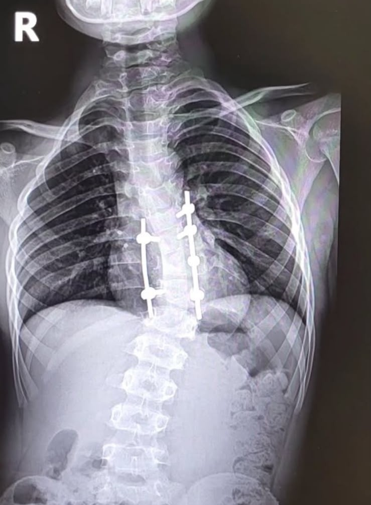
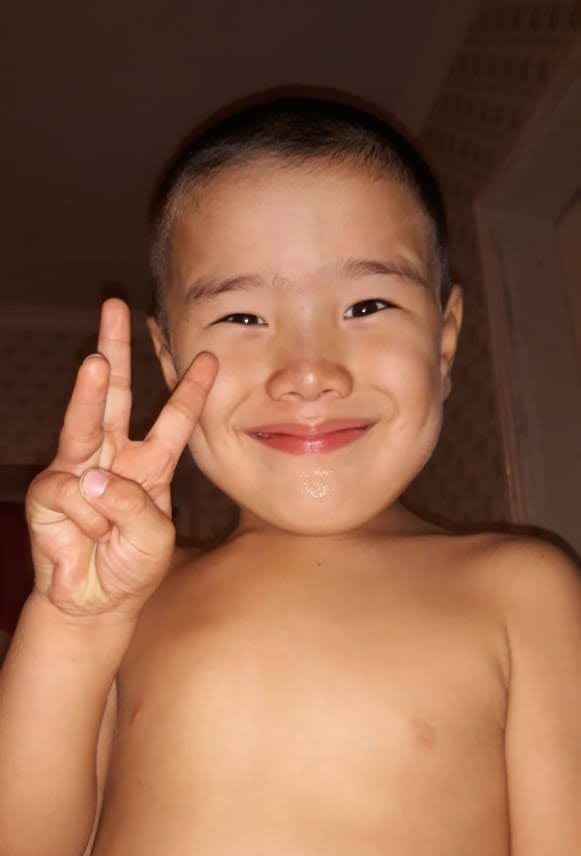
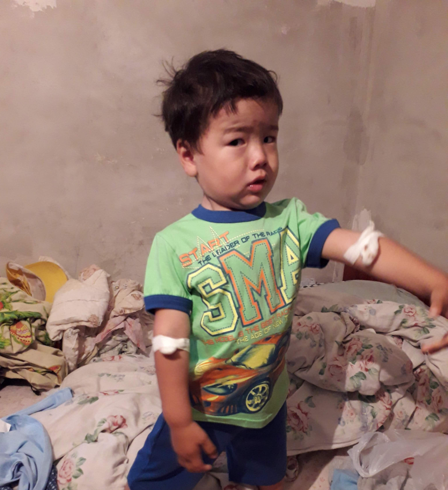
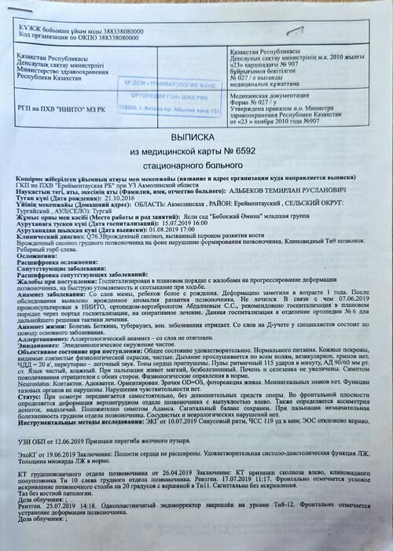
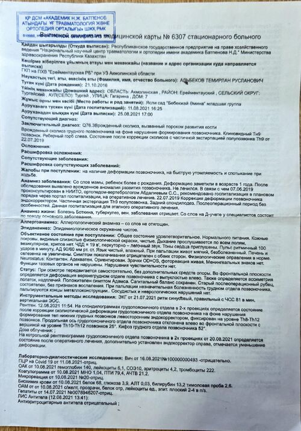
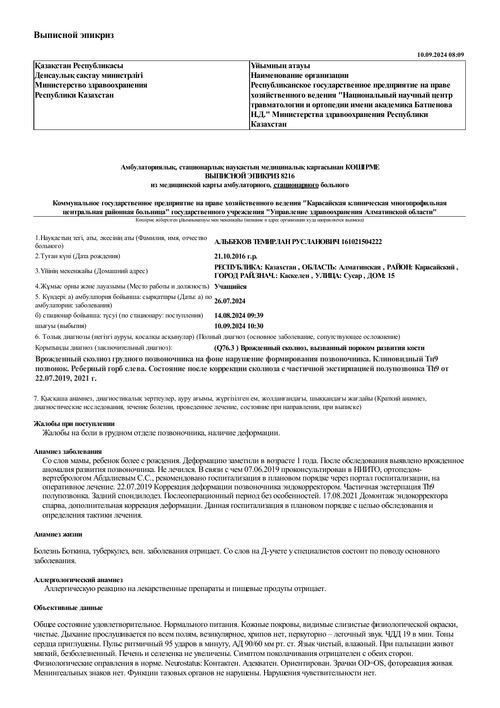
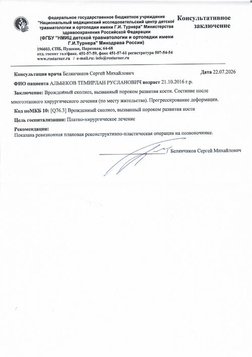
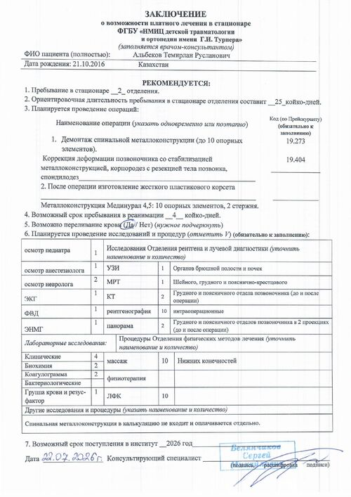
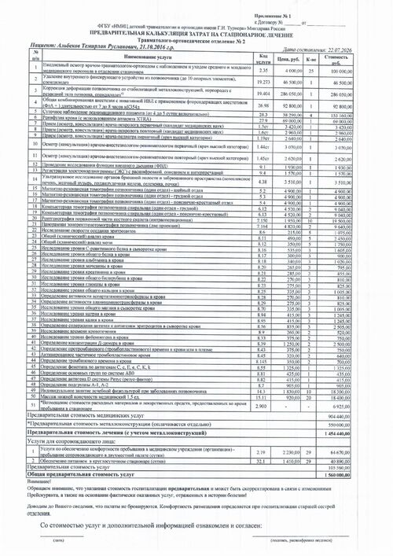

Операция и медицинские услуги
Демонтаж старой конструкции, коррекция деформации, анестезия, реанимация, диагностика и наблюдение персонала
904 440 ₽
Срочный сбор · Вертебрология / ортопедия
Мы — родители Темирлана. Позади уже три операции. НМИЦ детской травматологии и ортопедии имени Г.И. Турнера готов провести нашему сыну четвёртую, ревизионную операцию на позвоночнике. Публикуем настоящие документы клиники — без преувеличений и без давления.
Сумма — по предварительной калькуляции клиники, без перелёта и проживания после выписки (эти цифры объявим отдельно, как только узнаем точно). Пересчёт ₸ → ₽ ориентировочный.

История Темирлана
У нашего сына врождённый порок развития кости — сколиоз, который проявился ещё в раннем детстве. Позвоночник формировался неправильно с самого начала, и с возрастом искривление усиливалось.
Темирлану уже сделали три операции на позвоночнике: в июле 2019, августе 2021 и сентябре 2024 года — в Национальном научном центре травматологии и ортопедии имени академика Батпенова в Казахстане. Каждый раз хирурги корректировали деформацию и укрепляли позвоночник металлоконструкцией.


Но искривление продолжает расти даже после трёх операций. В июле 2026 года врач-консультант НМИЦ детской травматологии и ортопедии имени Г.И. Турнера в Санкт-Петербурге — одной из ведущих клиник страны по патологиям костей у детей — подтвердил: нужна ещё одна, ревизионная операция. Старую конструкцию демонтируют, деформацию скорректируют и установят новую стабилизацию с корпородезом и резекцией тела позвонка.
Госпитализацию мы ориентировочно планируем на 2026 год. Операция и сопровождение обойдутся минимум в 1 560 000 ₽ — точная сумма может измениться, клиника предупреждает об этом прямо в документах. Сверх этого нужны перелёт и проживание в Санкт-Петербурге — эти цифры мы объявим дополнительно, как только будем знать точно.
И здесь для нас важна честность: мы не знаем точно, будет ли эта, четвёртая операция последней. Возможно, в будущем понадобится ещё одна — но пока это не точно, и мы не хотим утверждать того, в чём сами не уверены.
Прозрачный бюджет
Суммы — из официальной предварительной калькуляции НМИЦ им. Г.И. Турнера от 22.07.2026 на эту, четвёртую операцию.
Демонтаж старой конструкции, коррекция деформации, анестезия, реанимация, диагностика и наблюдение персонала
Импланты Мединурал 4,5: 10 опорных элементов и 2 стержня для стабилизации позвоночника. Оплачивается отдельно от медуслуг
Палата и питание для одного из родителей на 29 суток на время госпитализации Темирлана
Авиабилеты в Санкт-Петербург и обратно, проживание после выписки из стационара — сумма пока уточняется у клиники
Подтверждение
Настоящие выписки и заключения — от первой операции в 2019 году до консультации в НМИЦ им. Г.И. Турнера в 2026-м.






🔒 Публикуем документы в оригинале, чтобы каждый мог убедиться в диагнозе и стоимости лечения.
Путь к операции
НИИТО, Астана. Коррекция деформации позвоночника эндокорректором, частичная экстирпация полупозвонка Th9, задний спондилодез.
ЗавершеноЦентр им. академика Батпенова, Астана. Демонтаж эндокорректора справа, дополнительная коррекция деформации, задний спондилодез.
ЗавершеноЦентр им. академика Батпенова. Частичная ламинэктомия Th9, дополнительная коррекция деформации, задний спондилодез. Исход — улучшение.
ЗавершеноНесмотря на три операции, деформация продолжает расти. Врач-консультант подтвердил необходимость ещё одной, ревизионной операции и предоставил калькуляцию лечения.
ЗавершеноСобираем на демонтаж старой конструкции, коррекцию деформации, новую стабилизацию и сопровождение.
В процессеДемонтаж конструкции, коррекция деформации со стабилизацией, корпородез с резекцией тела позвонка, спондилодез.
ПредстоитМы не знаем точно, понадобится ли Темирлану лечение после этой операции. Если да — сообщим об этом отдельно, когда будет ясность.
Прогресс сбора
Сбор только начался — мы показываем реальную картину, какой бы скромной она пока ни была.
Как помочь
Перевод на карту в приложении Kaspi.kz
Перевод на карту в приложении Halyk Bank
Перевод в Kaspi.kz или Halyk Bank по номеру телефона
Если удобнее перевести через российский банк
Реквизиты — наши, семьи Темирлана: карты и номер для переводов внутри Казахстана оформлены на Жанару Б., номер для переводов из России — на Уалихана Д. Медицинские документы и калькуляцию клиники мы опубликовали в разделе «Документы».
Вопросы и ответы
На оплату операции, металлоконструкции и пребывания сопровождающего — согласно официальной калькуляции НМИЦ им. Г.И. Турнера, опубликованной в разделе «Документы». После лечения мы опубликуем отчёт с чеками.
Да, у Темирлана уже было три операции — в 2019, 2021 и 2024 году. Несмотря на это, деформация позвоночника продолжает расти, и врачи НМИЦ им. Г.И. Турнера подтвердили: нужна ещё одна, ревизионная операция. Все выписки опубликованы в разделе «Документы».
Мы не знаем точно. Возможно, после неё понадобится ещё одна операция — но пока это не подтверждено, и мы не хотим утверждать того, в чём сами не уверены. Если ситуация прояснится, расскажем об этом здесь.
В разделе «Документы» опубликованы оригиналы всех выписок — с 2019 по 2026 год — и калькуляция клиники. Вы можете написать нам напрямую по контактам ниже и задать любые вопросы.
Да — в разделе «Как помочь» есть отдельный номер для переводов из России. Для остальных стран подойдёт перевод на карту Kaspi или Halyk — большинство банков поддерживают международные переводы на карту.
Излишек пойдёт на перелёт, проживание или следующие операции Темирлана — обо всех крупных тратах мы отчитаемся открыто.
Да — просто перешлите эту страницу или видео знакомым. Огласка помогает не меньше, чем деньги: кнопка «Поделиться историей» есть в самом начале страницы.
Мы на связи
Есть вопросы о сборе или хотите предложить помощь — напишите нам любым удобным способом.